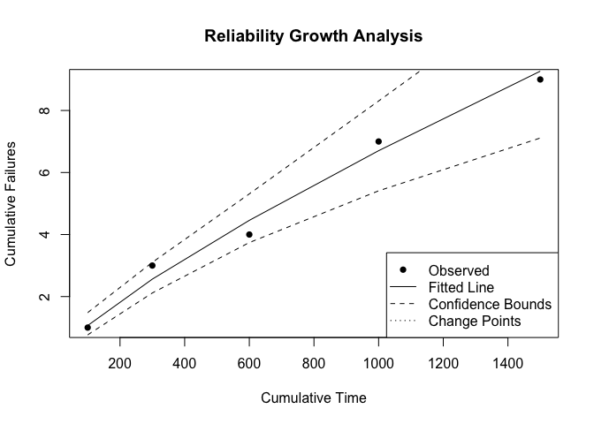

Introduction
Welcome to ReliaGrowR! This package provides modeling and plotting functions for Reliability Growth Analysis (RGA), including:
- Duane Analysis
- Crow-AMSAA
- Piecewise NHPP
- Piecewise NHPP with Change Point Detection
RGA is an important part of reliability engineering, focused on improving reliability during development and testing of products. By analyzing failure data, RGA helps engineers and researchers identify trends, estimate reliability parameters, and track improvements over time.
To learn more about RGA and this package, please view the vignette.
Installation
To install the release version of ReliaGrowR, use:
install_packages('ReliaGrowR')You can install the development version of ReliaGrowR like so:
devtools::install_github('paulgovan/ReliaGrowR')Example
Here is a basic example of Reliability Growth Analysis. First, load the package.
Next, suppose a machine has failed at the following times with the corresponding number of failures.
To perform RGA, use the rga function and plot the results. The plot displays the cumulative failures over time along with the fitted reliability growth model.
result <- rga(times, failures)
plot(result, main = "Reliability Growth Analysis", xlab = "Cumulative Time", ylab = "Cumulative Failures")
Code of Conduct
Please note that the ReliaGrowR project is released with a Contributor Code of Conduct. By contributing to this project, you agree to abide by its terms.